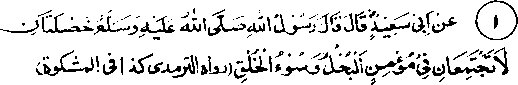
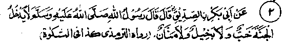
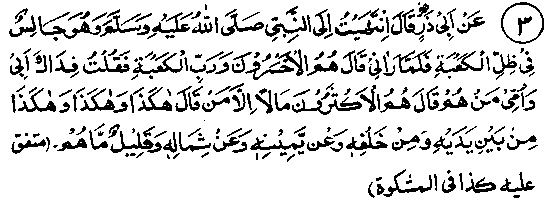
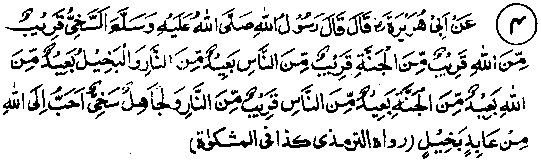
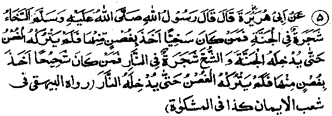
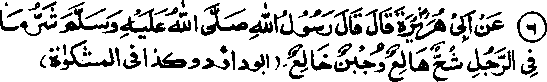
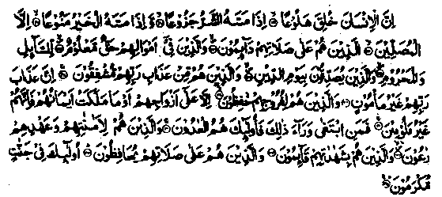
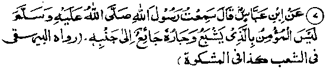

Chapter Two · Section (b): Ahadith regarding the evils of miserliness
Section (b)
Ahadith Regarding the Evils of Miserliness
1. Some relevant Ahadith

1. Rasulullah Sallallaho alaihe wasallam has said that two habits cannot be found in a Mo’min, one miserliness, two, bad temper.
Note: This Hadith means that miserliness and bad temper cannot be found in a Mo’min, as these are clearly against the dignity of a Mo’min, who will always be worried about his Imaan (Faith), lest he is deprived of it by doing something wrong; just as a virtue attracts another virute, in the same way a vice begets another vice. Another Hadith says more definitely that Shuh (a high degree of miserliness) cannot co-exist with Imaan, just as water and fire cannot remain together; the one is bound to overpower the other. If water is more powerful, fire will be exitinguished; otheiwise the water will be evaporated by the fire. Similarly, the two habits mentioned in the above Hadith are opposed to Imaan and, if Imaan and these two coexist in someone, then by and by one is bound to finish the other. An Hadith says that there is no Friend of Allah but is endowed by providence with generosity and affability.
Another Hadith says that generosity is a permanent habit of a Friend of Allah. And this is obvious, for if anyone has a love for and connection with Allah Ta‘ala, he will automatically long to spend on His Creation, as it is an obligation in love to look after the dear ones of the Beloved. So, when Allah’s Creation is referred to as 'His dependants'. His friend will certainly love to spend on them; and whosoever has strong ties with the Creator, will naturally do more for such dependants. If, on the other hand, the so-called friend of Allah does not wish to spend on "His dependants" or those who are close to Him. clearly the claim of friendship with Allah is false.

2. Abu Bakr Radhiallaho anho has quoted Rasulullah Sallallaho alaihe wasallam to say that a deceitful person will not enter Jannah, nor will the miser or the one who boasts of the favours done by him.
Note: The Ulama have said that no one having the above-mentioned qualities will enter Jannah. If however, a Momin happens to have these bad qualities in him, in the first place he may be afforded an opportunity by Allah Ta'ala, while in this world, to seek Divine " forgiveness or else he will be put in Jahannam till he is purified of his sins and, then only, he will enter Jannah. To go to Jahannam, even for a short while, is not to be taken lightly, as the ordinary fire which is unbearable stands no comparison to the fire of Jahannam. Rasulullah Sallallaho alaihe wasallam has said that the intensity of the heat in the fire here is a seventieth part of the fire of Jahannam. The Sahabah submitted that the fire here inflicts a very painful injury. Thereupon Rasulullah Sallallaho alaihe wasallam said that the other is sixty-nine times hotter.
Another Hadith says that the person suffering the lightest punishment will be made to wear a pair of shoes prepared from the fire of Jahannam, which will make his brain boil like a pot on the fire. Another Hadith says that Allah Ta‘ala has prepared the Jannat-e-Aden (a special part of Jannah) with His Own Blessed Hands and adorned it. He then ordered the angels to make canals flow therein and suspend fruits in it. When Allah Ta‘ala viewed its excellent embellishment, He proclaimed, "By My Honour, by My Glory and by My Grandeur on the high Throne, no miser shall enter here."

3. Abu Zarr Radhiallaho anho has said: Once I visited Rasulullah Sallallaho alaihe wasallam, who was sitting in the shade of the Holy Ka‘bah. When he saw me, he said, ‘By the Lord (Allah) of the Ka‘bah, those people are the losers. I submitted, ‘which people’? He replied, "The rich, except those of them who spend on their right and on their left, in their front and behind their backs, but such of them are rare".
(Mishkaat).
Note: Abu Zarr Radhiallah anho was one of the most ascetic Sahabah, as has been mentioned earlier in this book. On seeing him, what Rasulullah Sallallaho alaihe wasallam said was in reality for Abu Zarr’s consolation that he, being a pious but poor person, may not feel dejected at any time about his poverty. The truth is that property and riches in excess are not things to be coveted: these may be a source of damage and loss, as these may lead to heedlessness towards Allah Ta'ala. It is often seen that people seldom turn towards Allah Ta'ala and seek His help without becoming needy. Those rich are exceptional who are gifted by Allah Ta'ala with a natural urge to extend their generous hand to the needy all around. For them, their wealth is a blessing. But, as Rasulullah Sallallaho alaihe wasallam has said, this type is rare. More often than not, the abundance of wealth has in its wake sin, debauchery, vagrancy, extravagant living. To spend on wrong occasions or for fame and show are the easy direction of wasteful expenditure of wealth. For example, on marriages and other ceremonies, hundreds of thousands of rupees are spent lavishly, whereas lack of funds will be the plea for not spending on the needy and hungry to please Allah.
An Hadith says that those who are rich (in this life) will have the least assets in the Hereafter, except the ones who earn honestly and spend freely in charity. Truly, wealth is a source of honour and grace for those who spend it freely in good cause, while for those who keep collecting and counting it, it is a fore-runner of calamities and ultimate ruin and a waste by itself. Wealth is lacking in grace,as it will not bring any worldly or religious benefit to its owner unless it is separated from him.

4. Rasulullah Sallallaho alaihe wasallam has said, "A generous person is close to Allah, close to Jannah and close to people, but fair away from Jahannam; whereas a miser is far away from Allah, far from Jannah and far from people but he is close to Jahannam. An ignorant but generous person is certainly dearer to Allah than a pious miser."
Note: It means that a person may be offering prayers in plenty and lengthy Nawafil, while (compared to him) another person does not offer many prayers and Nawafil, but excels in generosity and, so, is dearer to Allah Ta'ala. ‘Fraidh’ of course are obligatory for everyone, whether he is generous or not.
Imaam Ghazali has quoted that once, when the Prophet Yahya Bin Zakariyya Alaihissalaam asked Shaitan to say whom he loved most and for whom was his worst hatred, Shaitan replied that he most loved a miser Mo’min and extremely hated an immoral but generous person. Yahya Alaihissallam wanted to know how was that? He explained that he had no anxiety for a miser, as his stinginess would be enough to take him to Jahannam, whereas an immoral person’s generosity is a permanent worry for him (the Shaitan) as Allah Ta'ala may overlook all his sins due to his generosity. This means that, if at any time Allah Ta'ala is pleased with the generosity of the impious person, Divine Compassion and Forgiveness may wash out all his sins and misbehaviours. In that event,Shaitan’s life-long effort to make him a sinner will be rendered ineffectual.
One Hadith says that a person is generous due to his good expectations from Allah Ta'ala, while a miser is lacking in this. Good expectations mean that One Who granted him a favour in the first place will continue to be kind in future as well. Such a person is close to Allah Ta'ala, while a miser has no faith in the limitless treasures of Allah Ta'ala Who has created all the means of income and Who has the Power to suspend the fruitfulness of those means. A merchant may sit at his shop endlessly, without having anyone to buy his goods and the farmer may till the land but get no produce: when all is the being granted by Him, it is foolish to have doubts as to wherefrom things will come. In spite of our tall claims in words, we seem to lack the faith that everything is being provided by Allah Ta'ala and we have little to say in the matter. The Sahabah Radhiallaho anhum firmly believed that Allah grants everything and He Who has given them today will continue to give them on another day as well. So they did not hesitate to spend everything for the cause of Allah.

5. Rasulullah Sallallaho alaihe wasallam has been quoted to say that generosity is a tree in Jannah. A generous person will catch hold of a branch of that tree and enter Jannah. Stinginess is a tree in Jahannam: the miser will catch hold of its branch, which will lead him into Jahannam.
Note: The highest form of stinginess is called ‘Shuh’ in Arabic; it is the name of a tree in Jahannam and whoever gets hold of a branch of itjs bound to be led to Jahannam. A Hadith says that the name of a tree in Jannah is ‘Sakha which means generosity. This virtue is a fruit from that tree. Similarly, stinginess or parsimony is a fruit from the tree known as ‘Shuh’. A miser will not enter Jannah. Another Hadith says that the branches of the tree of Sakhawat bend down in this world and anyone who gets hold of a branch reaches Jannah. In the same way, the tree of Miserliness has its branches in this world and whoever catches its branch will be led to Jahannam. Obviously when a person takes the road to the railway station, he is bound to get there sometime. In the same way, holding the branches of either of the two trees mentioned in this Hadith will lead a person to where that tree exists.

6 Rasulullah Sallallaho alaihe wasallam has said that among the worst type of habits that a man may have, is that kind of miserliness which drives a man to impatience and, such cowardice and fright which may endanger his life.
Note: Allah Ta'ala has warned in the Holy Qur’an about these two weaknesses, as follows:

Indeed man is created impatient; he becomes vexed when an evil befalls him, save the prayerful who are steadfast and constant at their prayers; And in whose wealth there is-a right acknowledged for the beggar and those ashamed to beg, and those who believe in the Day of Judgment; and those who are fearfid of their Lord’s Punishment; indeed the punishment of the Lord is that before which none can feel secure (everyone is frightened of it). And those who preserve their chastity, save with their wives and those whom their right hands possess, for there they shall be blameless; but whoso seeketh more than that, those are they who are trans gressors; and those who keep their pledges and covenant; and those who stand by their testimony and those who are steadfast in their Fardh prayers; those will dwell in Gardens, honoured”. (al-Ma’aary:19-35)
The same subject has been treated in Surah. (al-Mo’minoon) "Imran bin Husain Radhiallaho anho has said that once Rasulullah Sallallaho alaihe wasallam got hold of the loose end of his turban and said, Tmran, Allah Ta'ala loves spending of wealth and dislikes withholding it, so spend on people and feed them; do not harm anyone so that your own needs are nqj ignored; listen carefully! Allah Ta'ala approves deep thinking whenever one is beset with doubts. In cases of doubt about the lawfulness of a thing, one should not act casually but exercise deep thinking; and He likes clear intellect to face passions (these should not be allowed to overpower one’s senses). Allah loves generosity, even if it is shown by giving a few dates (keeping in view your capacity, do not feel shy of giving few or small amounts of things.'yAUah likes bravery, be it in killing a snake or a scorpion. Allah Ta'cda does not like one to be frightened in danger, but one should hide his fear if it arises and not mention it to others . In fact, efforts should be made to overcome it. There are a number of Du'aas reported from Rasulullah Sallallaho alaihe wasallam for supplicating Allah Ta'ala to save one from cowardice.

7. Rasulullah Sallallaho alaihe wasallam has saM that a person ceases to be a Mo’min when he fills his own belly while a neighbour of his remains hungry.
Note: Indeed, it is disgraceful that one should have enough to eat a full meal, while a neighbour of his remains hungiy.lt is imperative that he should eat less and give something to help the neighbour. Rasulullah.Sallallaho alaihe wasallam has said that a person does not believe in me as his Rasul if he fills his own belly while knowing that his next-door neighbour has nothing to eat. Another Hadith says that there will be many people on the Day of Judgment who will catch hold of their neighbour’s clothes and make a submission to Allah Ta'ala, "O, Allah,ask this man why he would shut his door on me and would not give me anything that was surplus to his own needs". Another Hadith quotes the saying of Rasulullah Sallallaho alaihe wasallam, "O, people give Sadaqah; I will testify to it on the Day of Judgment. There may be some of you who have something left over from their own meals at night while one of their cousins may spend the night hungry; some of you might keep earning to increase their wealth while their poor neighbour is unable to earn anything for himself.
Another Hadith quotes Rasulullah Sallallaho alaihe wasallam to say that it is enough to label a man a miser when he insists on having his full share, not allowing a particle to be left back, that is, when dividing something among relatives or neighbours, he is anxious to get his own exact share, not yielding anything to others at all. This is a sign of miserliness, as no great harm is done if a little extra from his share goes to someone else.